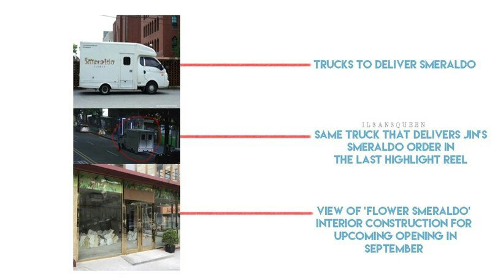

Многие люди считают, что цветы предназначены для определенных, специальных дней. Я думал так же до того, как стал флористом. Но учитель, который обучал меня в Америке, говорил: «Нам не нужны цветы в особенные дни, это цветы делают дни таковыми».
Когда я решил привезти смеральдо в Корею, то эти слова стали моей силой. «Даже если они не знают об этом, я надеюсь, они будут счастливы получить смеральдо...». С этими мыслями я решил открыть специальной магазин «Цветы Смеральдо» в сентябре этого года. Интерьер «Цветы Смеральдо» будет в минималистичном стиле, в котором преобладает белый, чтобы подчеркнуть красоту смеральдо.
Свежие букеты будут размещены на витрине по-разному, в зависимости от атмосферы каждого дня, чтобы стать мимолётной частичкой счастья для прохожего. (Я ведь прав?..) Магазин всё ещё готовится к открытию, но, в случае необходимости, я предлагаю доставку в некоторые районы. Но, пожалуйста, поймите, что тогда они будут в ограниченном количестве. Смеральдо могут отражать разную атмосферу, поэтому важно, чтобы Вы заранее рассказали мне, чего вы хотите.
Немедленная доставка цветов невозможна, в среднем, она занимает одну неделю, а также в случае необходимости доставки и поиска Вам следует оставить заказ за две недели до получения. (Я, конечно, постараюсь найти всё необходимое к сроку.) С каждым днём погода становится невероятно душной. Так как смеральдо выращивают на фермах в северной Италии, резкая смена климата, которая может произойти при транспортировке в Корею, навредит цветку. Поэтому доставка будет осуществляться только в пределах определенной зоны, чтобы не испортить внешний вид. Таким образом смеральдо сможет оставаться свежим и красивым. 